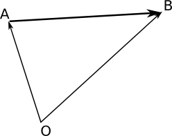
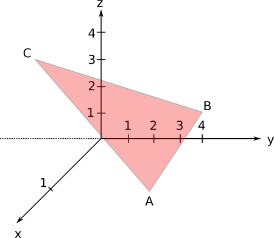
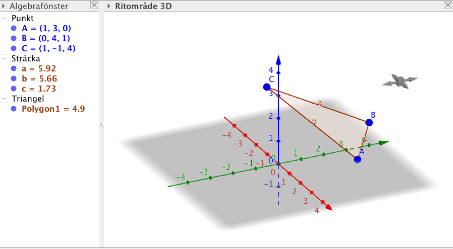

8. 3 dimensionellt koordinatsystem
Ett tredimensionellt koordinatsystem får vi genom att lägga till \(x\) och \(y\)-axlarna en \(z\)-axeln. Har vi euklidisk, (normal) geometri så står axlarna 90\(^{\circ}\) mot varandra.

När vi arbetar med vektorer i tredimensionellt koordinatsystem så introducerar vi \(\overline{k}\) som är parallell med \(z\)-axeln.
Exempel 1 Rita triangeln \(A=(2,0,1)\), \(B=(0,4,0)\) och \(C=(2,0,4)\) i ett \(xyz\)-koordinatsystem.
Rita triangeln \(A=(2,0,1)\), \(B=(0,4,0)\) och \(C=(2,0,4)\) i ett \(xyz\)-koordinatsystem på GeoGebra.
VIDEO
Då vi arbetar i tre dimesioner får vektorerna en \(\overline{k}\) komponent till. Denna \(\overline{k}\)-komponent är parallell med \(z\)-axeln och har längden ett.
Längden av en vektor \(\overline{a}=x\overline{i}+y\overline{j} +z\overline{k}\) i tredimensioner får vi som \(\overline{a}= \sqrt{x^2+y^2+z^2}\).
Exempel 2 Från punkten \(A=(-1,2,4)\) förflyttar vi oss 6 enheter i riktning av \(\overline{a}=-2\overline{i}-2\overline{j} +\overline{k}\). Till vilken punkt kommer vi?
Lösning
Vi kallar slutpunkten för P. Vi förflyttar oss längs med \(\overrightarrow{OP}=\overrightarrow{OA}+\overrightarrow{AP} = \overrightarrow{OA}+6\overline{a}^0\)
\(\overline{a}^0=\dfrac{1}{\mid\overline{a}\mid}\overline{a} = \dfrac{1}{\sqrt{(-2)^2+(-2)^2+1^2}}(-2\overline{i}-2\overline{j} +\overline{k}) =\dfrac{1}{3}(-2\overline{i}-2\overline{j} +\overline{k}) \).
Vektorn \(\overrightarrow{OA}=-\overline{i}+2\overline{j} +4\overline{k}\).
\(\overrightarrow{OA}+6\overline{a}^0\) blir då
\(\begin{array}{l} -\overline{i}+2\overline{j} +4\overline{k}+6\cdot \dfrac{1}{3}(-2\overline{i}-2\overline{j} +\overline{k}) \\ = -\overline{i}+2\overline{j} +4\overline{k}-4\overline{i}-4\overline{j} +2\overline{k} \\ = -5\overline{i}-2\overline{j} +6\overline{k}. \end{array}\)
Punkten \(P\) har koordinaterna \((-5,-2,6)\).
Vektorn \(\overrightarrow{AB}\) mellan punkterna \(A=(x_1,y_1,z_1)\) och \(B=(x_2,y_2,z_2)\) får vi via att flytta oss via origo. Vi får att \(\overrightarrow{AB}=\overrightarrow{AO}+\overrightarrow{OB} = -\overrightarrow{OA}+\overrightarrow{OB}\).

Vektorerna \(\overrightarrow{OA}\) och \(\overrightarrow{OB}\) får vi som \(\overrightarrow{OA}=x_1\overline{i}+y_1\overline{j}+z_1\overline{k}\) och \(\overrightarrow{OB}=x_2\overline{i}+y_2\overline{j}z_2\overline{k}\).
Betyder att \(-\overrightarrow{OA}+\overrightarrow{OB} = -(x_1\overline{i}+y_1\overline{j}+z_1\overline{k})+x_2\overline{i}+y_2\overline{j} +z_2\overline{k}= (x_2-x_1)\overline{i}+(y_2-y_1)\overline{j}+(z_2-z_1)\overline{k}\).
Vi kan även bilda vekorn \(\overrightarrow{AB}\) mellan \(A=(x_1,y_1,z_1)\) och \(B=(x_2,y_2,z_2)\) som \(\overrightarrow{AB}=(x_2-x_1)\overline{i}+(y_2-y_1)\overline{j}+(z_2-z_1)\overline{k}\).
Längden av vektorn \(\overrightarrow{AB}\) mellan \(A=(x_1,y_1,z_1)\) och \(B=(x_2,y_2,z_2)\) får vi som avståndet mellan A och B.
\(\mid\overrightarrow{AB}\mid=\sqrt{(x_2-x_1)^2+(y_2-y_1)^2+(z_2-z_1)^2}.\)
Exempel 3 En rymdraket färdas med konstant hastighet och riktning. Under en timme har den färdats från \(A=(-4,-3,-6)\) till \(B=(6,8,10)\). Vilken var raketens koordinat två timmar före den anlände till \(A\)?
Lösning
Vi ritar först en bild:

Vi bildar vektorn \(\overline{v}\) mellan punkterna \(A\) och \(B\).
\(\begin{array}{rl} \overline{v}=&(x_2-x_1)\overline{i}+(y_2-y_1)\overline{j}+(z_2-z_1)\overline{k} \\ = &(6-(-4))\overline{i}+(8-(-3))\overline{j}+(10-(-6))\overline{k}\\ =&10\overline{i}+11\overline{j}+16\overline{k}. \end{array}\)
Vektorn
\(\begin{array}{rl} \overrightarrow{OP}=&\overrightarrow{OA}+\overrightarrow{AP} \\ =&\overrightarrow{OA}-2\overline{v} \\ =& -4\overline{i}-3\overline{j}-6\overline{k}-2(10\overline{i}+11\overline{j}+16\overline{k})\\ =& -4\overline{i}-3\overline{j}-6\overline{k}-20\overline{i}-22\overline{j}-32\overline{k} \\ =& -24\overline{i}-25\overline{j}-38\overline{k}\\ \end{array}\)
Punkten \(P\) har koordinaterna \((-24, -25,-38)\).
Uppgifter
- Rita på papper ett \(xyx\)-koordinatsystem. Rita in triangeln vars ändpunkter är \(A=(1,3,0)\), \(B=(0,4,1)\) och \(C=(1,-1,4)\).

- Rita i ett \(xyx\)-koordinatsystem på GeoGebra triangeln vars ändpunkter är \(A=(1,3,0)\), \(B=(0,4,1)\) och \(C=(1,-1,4)\).
Punkterna in med kommandot A=(1,3,0).
Triangeln med kommandot Polygon[A,B,C].
Vi får något i stil med

- Låt \(\overline{a}=2\overline{i}-3\overline{j}+\overline{k}\) och \(\overline{b}=-3\overline{i}-\overline{j}-2\overline{k}\). Bilda vektorerna \(\overline{a}+\overline{b}\) och \(2\overline{a}-\overline{b}\) och bestäm längden av dem.
\(\overline{a}+\overline{b}=-\overline{i}-4\overline{j}-\overline{k}\).
\(\mid\overline{a}+\overline{b}\mid= \sqrt{(-1)^2+(-4)^2+(-1)^2} = \sqrt{18}=3\sqrt{2}\).
\(2\overline{a}-\overline{b}=7\overline{i}-5\overline{j}+4\overline{k}\).
\(\mid2\overline{a}-\overline{b}\mid=\sqrt{7^2+(-5)^2+4^2}=\sqrt{90}=3\sqrt{10}\).
- Visa att \(\overline{a}=\overline{i}+4\overline{j}-2\overline{k}\) och \(\overline{b}=-\dfrac{1}{2}\overline{i}-2\overline{j}+\overline{k}\) är parallella.
Om två vektorer är parallella skall vi kunna skriva de som \(\overline{a} =r\cdot \overline{b}\) där \(r \in \mathbf{R}\).
Om två vektorer är parallella skall vi kunna skriva de som \(\overline{a} =r\cdot \overline{b}\) där \(r \in \mathbf{R}\).
Vi tar och gör det.
\(\begin{array}{rcl} \overline{a} &=& r\cdot \overline{b} \\ \overline{i}+4\overline{j}-2\overline{k} &=& r(-\frac{1}{2}\overline{i}-2\overline{j}+\overline{k}) \\ \end{array}\)
Väljer vi \(r=-2\) får vi att \(\overline{i}+4\overline{j}-2\overline{k} = -2(-\frac{1}{2}\overline{i}-2\overline{j}+\overline{k})\).
De är parallella eftersom \(\overline{a}=-2\overline{b}\).
- Ett flygplan A som flyger på höjden 6 km observeras 3 km rakt norrut från ett flygfält. Ett annat flygplan B som flyger på höjden 10 km observeras 5 km österut och 1 km söderut får flygfältet. Bestäm avståndet i km mellan flygplanen då flygfältet är i origo.
Rita en bild. Låt norrut/söderut vara steg på \(x\)-axeln, österut/västerut steg på \(y\)-axeln och höjden steg på \(z\)-axeln.
Bilda vektorn mellan punkterna och bestäm avståndet.
A:s koordinat \((-3,0,6)\) och B:s koordinat \((1,5,10)\).
Vektorn \(\overrightarrow{AB} = [1-(-3)]\overline{i}+(5-0)\overline{j}+(10-6)\overline{k} = 4\overline{i}+5\overline{j}+4\overline{k}\).
Längden \(\mid \overrightarrow{AB} \mid =\sqrt{4^2+5^2+4^2}=\sqrt{57}\) km.
- För vilka värden på \(r\) och \(s\) är vektorerna \(\overline{a}=r\overline{i}-\overline{j}+4\overline{k}\) och \(\overline{b}=-3\overline{i}-2\overline{j}+s\overline{k}\) parallella. Är de då lika- eller olika riktade?
Då \(\overline{a}\) och \(\overline{b}\) är parallella gäller att \(\overline{a} = t\cdot \overline{b}, t\in \mathbf{R}\). (Vi använder oss av \(t\) eftersom \(r\) finns i vektorerna.)
Alltså
\(\begin{array}{rcl} \overline{a} &=& t\cdot \overline{b} \\ r\overline{i} -\overline{j}+4\overline{k} &=&t(-3\overline{i}-2\overline{j}+s\overline{k}) \\ r\overline{i} -\overline{j}+4\overline{k} &=&-3t\overline{i}-2t\overline{j}+st\overline{k}\\ \end{array}\)
Uppdelning i basen är entydig. Alltså gäller att
\(\left\{ \begin{array}{rcll} r &=&-3t \\ -1 &=& -2t & \Leftrightarrow t =\frac{1}{2}\\ 4 &=&st \\ \end{array} \right.\)
Då \(t=\dfrac{1}{2}\) är \(\overline{a}\) och \(\overline{b}\) parallella. Eftersom \(t>0\) är de lika riktade.
Vå får då att \(r=-\dfrac{3}{2}\) och \(s=8\).
- Under en timme färdas en rymdraket från \(A=(7,4,10)\) till \(B=(3,5,3)\). Bestäm raketens koordinat efter 3 timmar då dem fortsätter att färdas med samma hastighet och riktning.
Vektor \(\overrightarrow{AB}=(3-7)\overline{i}+(5+4)\overline{j}+(3-10)\overline{k} = -4\overline{i}+\overline{j}-7\overline{k}\).
Punkten \(P\):s koordinater där det vi söker:
\(\begin{array}{rcl} \overrightarrow{AP} &=& \overrightarrow{OA} +4\overrightarrow{AB} \\ &=& 7\overline{i}+4\overline{j}+10\overline{k}+4(-4\overline{i}+\overline{j}-7\overline{k}) \\ &=& -9\overline{i}+8\overline{j}-18\overline{k} \\ \end{array}\)
\(P\):s koordinater är \((-9,8,-18)\).
- En triangels hörnpunkter är \(A=(0,2,1)\), \(B=(2,4,3)\) och \(C=(0,1,5)\). Bestäm
- mittpunkten \(P\) för sidan BC.
Så som alltid, kalla punkten för P och bilda \(\overrightarrow{OP}\).
\(P : (1,\dfrac{11}{2},4)\) .
- vekorn \(\overrightarrow{AP}\)
\(\overrightarrow{AP}= \overline{i} + \dfrac{7}{2}\overline{j}+3\overline{k}\) .
- triangelns tyngdpunkt. Triangelns tyngdpunkt hittar du där medianerna skär varandra. Förhållandet är \(2:1\) .
Kalla tyngpunkten för Q och bilda vektorn \(\overrightarrow{OQ}\).
\(\overrightarrow{OQ}=\dfrac{3}{2}\overline{i}+\dfrac{13}{3}\overline{j}+3\overline{k}\).
Mittpunkten är \((\dfrac{3}{2},\dfrac{13}{3},3)\).
- mittpunkten \(P\) för sidan BC.
- Bestäm slutpunkten då vi startar från \(A=(-1,3,-1)\) och rör oss 15 längdenheter i riktning av \(\overline{a}=3\overline{i}+4\overline{k}\) .
Slutpunkten är \((10,3,11)\).
- Vilken punkt på \(z\)-axeln är lika långt från punkterna \((1,2,3)\) och \((4,4,4)\) ?
Punkten har koordinaterna \( (0,0,17) \) .
- Ett klot har mittpunkten \((1,3,2)\) och radien \(5\) l.e. I vilken punkt skär klotet \(x\)-axeln?
Skärningspunkterna är två:\((\pm 2\sqrt{3}+1 , 0 ,0)\).
- När ett klot skär ett plan blir formen som uppstår en cirkel. Ett klots mittpunkt är \((2,-3,1)\) och radien är \(4\) l.e. Bestäm mittpunkt och radie för cirkeln som uppstår då klotet skär.
Vad betyder det för koordinaterna att vi skär ett plan? Hurdana ekvationer blidar du? Hur så cirkelns ekvation ut?
- \(xy\)-planet.
Ekvationen är \((x-2)^2+(y+3)^2=15\).
Mittpunkt är \((2,-3,0)\) och radien är \(\sqrt{15}\).
- \(xz\)-planet.
Ekvationen är \((x-2)^2+(z-1)^2=7\).
Mittpunkt är \((2,0,1)\) och radien är \(\sqrt{7}\) .
- \(yz\)-planet.
Ekvationen är \((y+3)^2+(z-1)^2=12\).
Mittpunkt är \((0,-3,1)\) och radien är \(\sqrt{12}\).
- \(xy\)-planet.